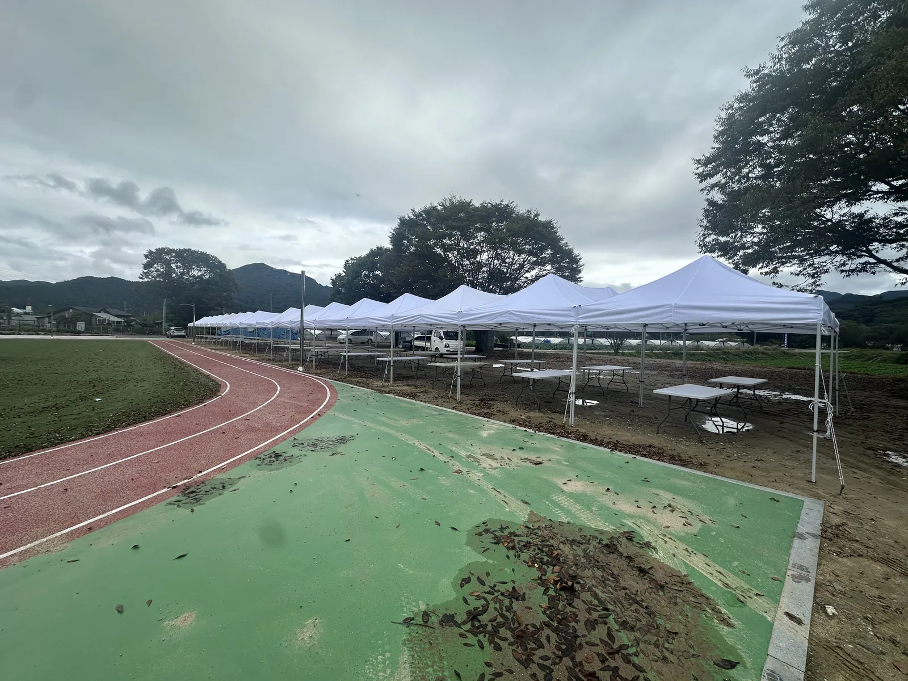
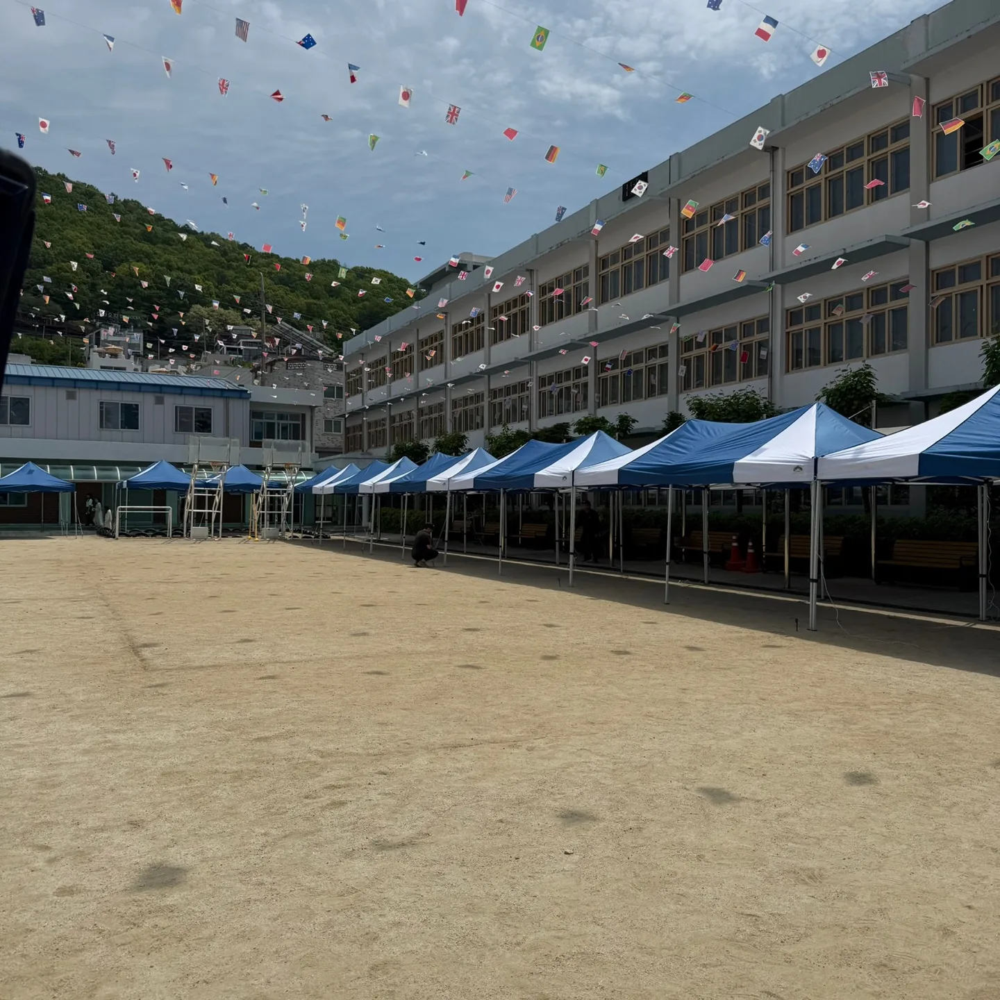
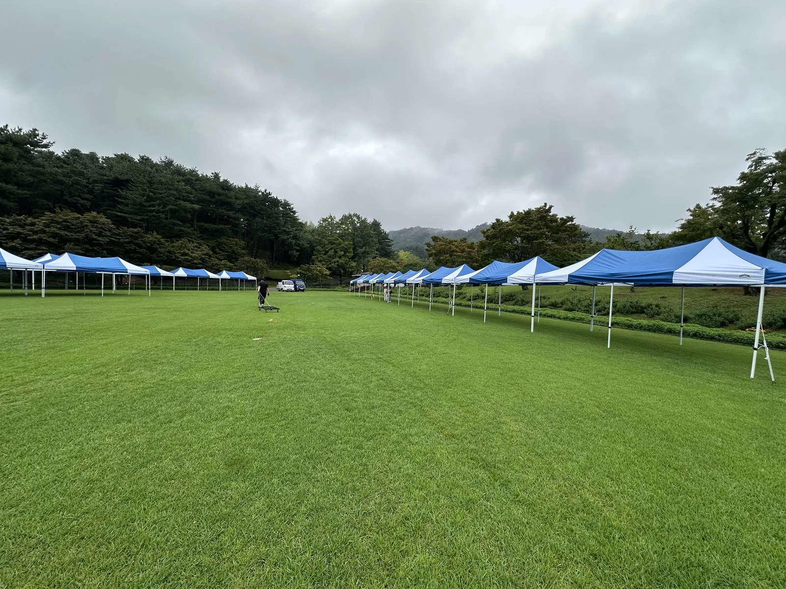

운동회 준비를 맡은 선생님이 가장 먼저 묻는 질문은 "천막이 몇 동 필요하냐"입니다. 답은 학생 수가 아니라 운동장에 학년이 어떻게 앉느냐에 달려 있습니다. 청주와 충북 학교 운동회 현장에서 저희가 실제로 수량을 잡는 순서를 그대로 적습니다.

학년별 대기 천막: 반 수가 아니라 "앉는 줄"로 셉니다
캐노피 천막 3×3m 한 동에는 학생이 의자 없이 돗자리로 앉을 때 20~25명, 의자를 놓으면 12~15명이 들어갑니다. 학급당 25명 안팎이면 학급당 한 동이 기본이고, 저학년은 학부모가 같이 앉는 경우가 많아 한 동을 더 잡습니다.
- 초등 6학급 × 4반 = 24학급 → 천막 24~26동
- 중고등학교는 학년 단위로 3×6m 천막을 쓰면 줄이 덜 흐트러집니다
- 운동장이 좁으면 천막을 "ㄷ"자로 돌리고 본부석을 짧은 변에 둡니다

본부석 · 급수 · 응급 공간은 따로 잡습니다
학년 천막만 세면 당일에 꼭 모자랍니다. 아래 네 곳은 별도 수량으로 잡아 두세요.
- 본부석 3×6m 1동 — 방송 장비 · 진행 테이블 2개 · 의자 6개
- 급수대 3×3m 1~2동 — 접이식 테이블 2개, 얼음물 보관 공간
- 보건 · 응급 3×3m 1동 — 그늘이 가장 짙은 자리(건물 옆)에
- 학부모 · 내빈석 3×6m 1~2동 — 의자 커버를 씌우면 내빈석 티가 납니다

흙 운동장과 트랙 옆, 고정 방법이 다릅니다
청주 시내 학교는 흙 운동장과 우레탄 트랙이 섞여 있습니다. 흙바닥은 팩을 박아 고정하고, 트랙 · 아스팔트는 팩을 박을 수 없어 물통 · 모래주머니 웨이트로 다리를 눌러 줍니다. 천막 한 동에 웨이트 4개가 기본이고, 바람이 잦은 봄 · 가을 운동회는 옆면 가림막을 한쪽만 달아 바람길을 터 줍니다.
설치는 전날 오후나 당일 새벽에 합니다. 학교는 보통 아침 7시부터 학생이 들어오니 새벽 5시 30분 설치 시작이 안전한 기준입니다. 철거는 폐회식 뒤 학생이 빠진 다음 30~40분이면 끝납니다.
같이 준비하면 편한 것
- 접이식 테이블 — 본부 2 · 급수 2 · 학년 접수 각 1
- 플라스틱 의자 — 내빈 · 학부모석 인원 + 여유 10%
- 음향 세트(스피커 2 · 무선 마이크 2) — 운동장 크기에 맞춰 스피커 위치를 잡아 드립니다
- 줄 차단봉 — 경기 구역과 관람 구역 구분
자주 묻는 질문
Q청주 초등학교 운동회에 천막은 보통 몇 동 빌리나요?
학급당 한 동을 기본으로 본부 · 급수 · 응급 · 내빈석을 더해 24학급 학교면 28~30동 정도가 나옵니다. 학급 수와 운동장 크기를 알려 주시면 배치도와 함께 수량을 다시 잡아 드립니다.
Q설치는 언제 하나요? 학교 수업에 지장 없나요?
전날 오후 수업이 끝난 뒤, 또는 당일 새벽 5시 30분부터 설치합니다. 학생 등교 전에 끝내는 것을 기준으로 일정을 잡습니다.
Q흙 운동장에 팩을 박아도 되나요?
학교마다 다릅니다. 팩을 박을 수 없으면 물통 · 모래주머니 웨이트로 고정하니 미리 알려 주세요. 트랙 위에는 팩을 쓰지 않습니다.